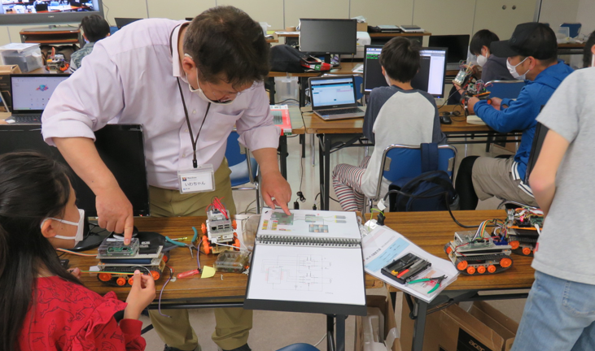

午前と午後の２回開催
第48,49回 Scratchペンと雨がテーマ & モータドライバしくみ講座
午前はScratch拡張機能のペン講座。午後の電子工作はHブリッジのモータードライバのしくみ講座です。
本日の青梅Dojo出欠確認です
ニンジャの申し込みは午前21名・午後9名の延べ30名。保護者8名、メンター5名の延べ43名が参加してくれました。
はじまるよー
本日のワークショップ１．Scratchプログラミング（入門・初級）
いつものスプライトとちょっと違うペンを知っていますか？ 入門者向けにラインアートの作り方をレクチャーしました。
みんなで共通のテーマは、Why!?大喜利の「雨をテーマに自由につくろう」です。フリー素材は📰CoderDojo青梅スタジオからリミックス。
ワークショップでチャレンジした作品
みんなで同じテーマは大人でも悩む100マス計算をペンで描いてくれました。電子機器に詳しい保護者が自作したコントローラーを、子供がmicro:bitでプログラミングして操作できるようにがんばっていました。他にもたくさん発表してくれたのですが、画面キャプチャに失敗、紹介できずごめんなさい。今までにつくったという驚きの作品もたくさんありました。
Scratchの教材は、CoderDojo青梅オリジナルです。毎回、みんなで同じテーマに挑戦。初心者には恒例の初心者向け「☁くものアスレチック」をレクチャーしています。
本日のワークショップ２．ラズパイ電子工作の配線モータードライバ
いよいよラズタンクの電子部品を配線していきます。改造しやすいようにブレッドボードに抜き差しできるワイヤーを接続します。配線が終わったらメンターが配線図と見比べて検査をします。

次回は6月18日(日)開催でーす。
お問い合わせのあるCoderDojo青梅の午後の部は、青梅IT未来塾の修了生が参加できます。修了生ではないけれど参加したいという意欲のある子（小５以上）には個別にLinux & Python教室を提供し、そのあとで午後の部に参加しています。それまでは午前のmicro:bitをお勧めします。
Connpassでイベント告知するので、またの参加をお待ちしています。参加申し込みはこちらのConnpassから
 CoderDojo青梅にご質問メールはこちら
CoderDojo青梅にご質問メールはこちら
😃